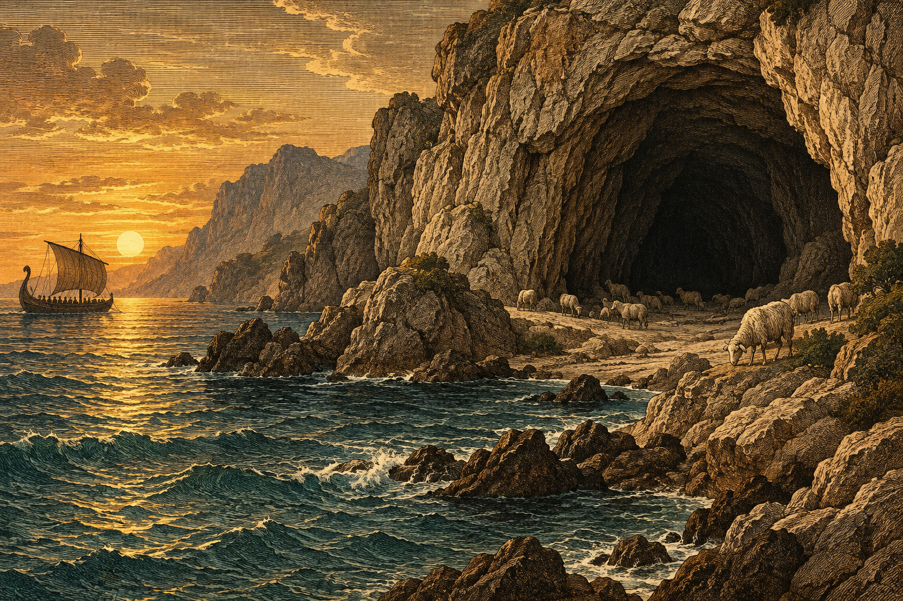
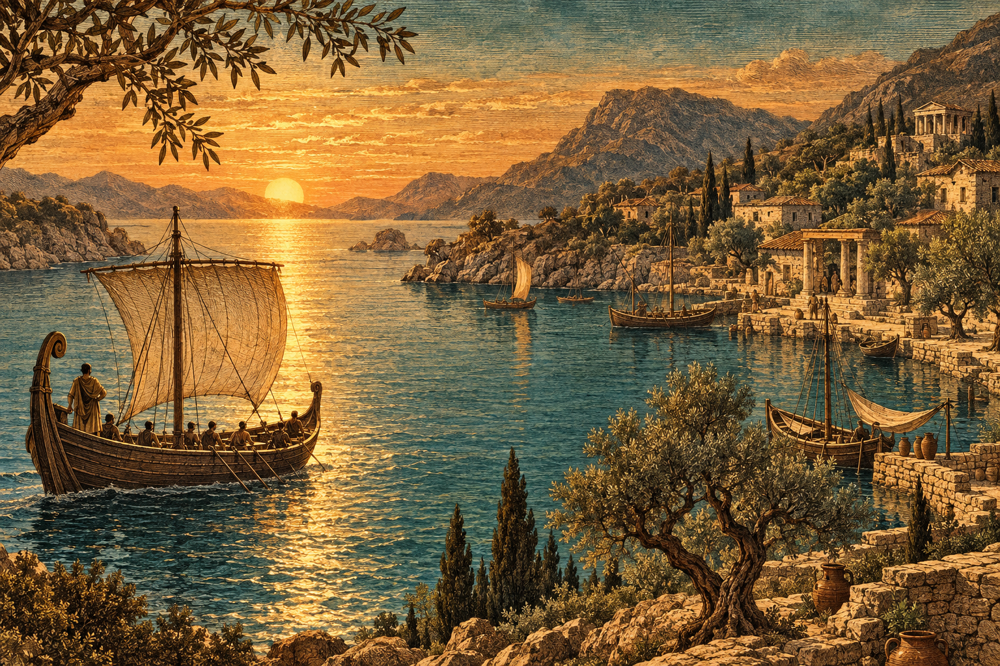

Your Experience
Walk along the rocky coast and observe the island’s grazing flocks. Our revised itinerary keeps travelers outside occupied caves. Finding cheese inside a home does not mean you have been invited to dinner.
The captain’s travel collection
Explore our shore excursions and homeward sailing route. Read the warnings before you pack.
Discover Our StopsShore excursion 01

Rugged scenery, remarkable sheep, and caves best admired from a safe distance.
Walk along the rocky coast and observe the island’s grazing flocks. Our revised itinerary keeps travelers outside occupied caves. Finding cheese inside a home does not mean you have been invited to dinner.
Keep the ship ready for departure. Do not assume every host follows the customs of hospitality. If your captain introduces himself as “Nobody,” follow his lead and save introductions for another day.
Bring drinking water, sturdy sandals, and your own food. Leave heavy luggage aboard. You may need both hands free—and an unexpected appreciation for sheep.
Fictional traveler review
One star for accommodation, five stars for our escape plan. Next time, I’m staying on the ship. — An anonymous crew member
Sailing experience 02
Open horizons and fresh sea air—with a strict no-taunting-the-Cyclops policy.
Join the rowing crew, watch the coastline fade, and share stories beneath the evening sky. Every traveler has a role: cooperation keeps our homeward voyage moving.
Once we escape danger, we keep sailing. Shouting your name, title, or home address at an angry Cyclops may turn a successful departure into a much longer journey.
Arrival times are estimates. Winds, waves, and divine interference can change our route. Follow crew instructions and remember: everyone aboard deserves to return safely.
Our homeward destination

After the uncertainty of the sea, imagine familiar shores and the people waiting for you. Ithaca is the reason our captain keeps sailing. Choose our homeward voyage if your idea of adventure includes finally coming home.
Choose Homeward to Ithaca